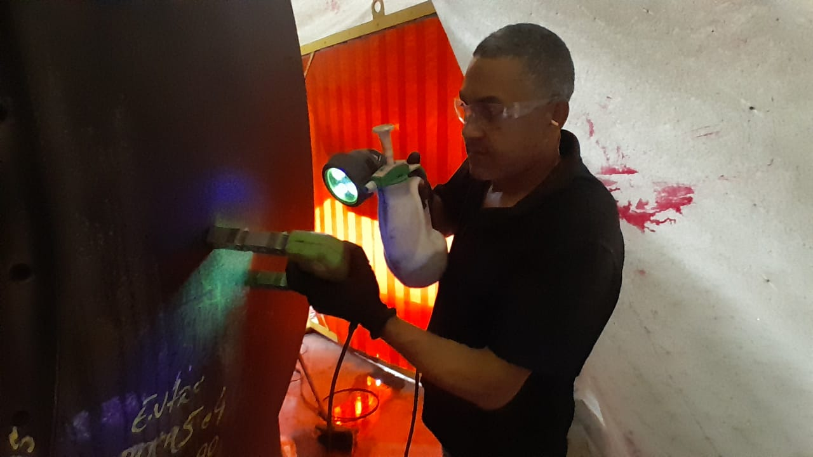

Inspeções relacionadas à NR-13
Realizamos serviços relacionados à avaliação de equipamentos abrangidos pela NR-13, contribuindo para o acompanhamento das condições de segurança e integridade dos equipamentos.
A G.O Inspeções atua na área de inspeção industrial e ensaios não destrutivos, oferecendo soluções técnicas para a avaliação da integridade, segurança e confiabilidade de equipamentos, componentes e estruturas.
Nosso trabalho é realizado com foco na identificação de descontinuidades, falhas e condições que possam comprometer a operação, contribuindo para decisões mais seguras e para a preservação da confiabilidade dos ativos industriais.
Confiabilidade
Segurança
Precisão
A inspeção industrial é fundamental para acompanhar as condições de equipamentos e estruturas, identificar possíveis problemas e contribuir para a prevenção de falhas.
A G.O oferece serviços de inspeção voltados à avaliação da integridade de componentes e equipamentos industriais, auxiliando nossos clientes na manutenção da segurança operacional e na tomada de decisões técnicas.
Utilizamos técnicas de Ensaios Não Destrutivos (END) para avaliar materiais e componentes sem comprometer sua utilização.
Realizamos serviços relacionados à avaliação de equipamentos abrangidos pela NR-13, contribuindo para o acompanhamento das condições de segurança e integridade dos equipamentos.
Método utilizado para identificar descontinuidades superficiais em materiais não porosos.
Pode ser aplicado na identificação de trincas, porosidades e outras descontinuidades abertas à superfície.


Ensaio destinado à identificação de descontinuidades superficiais e subsuperficiais em materiais ferromagnéticos.
É amplamente utilizado na inspeção de componentes soldados, peças e estruturas metálicas.


A inspeção visual é uma das principais etapas da avaliação de integridade.
Por meio de inspeção direta e recursos adequados, são avaliadas condições como:


A medição de espessura permite acompanhar a condição de componentes sujeitos a processos de desgaste e corrosão.
O acompanhamento periódico auxilia na identificação de perdas de espessura e na avaliação das condições de operação e manutenção dos equipamentos.


Cada inspeção é realizada com atenção aos detalhes e às características específicas do componente ou equipamento avaliado.
Nosso trabalho tem como objetivo contribuir para a identificação de condições que possam representar riscos à operação.
Informações precisas são essenciais para que empresas possam tomar decisões adequadas sobre manutenção, reparos e continuidade operacional.
Buscamos compreender a necessidade de cada cliente e oferecer uma solução adequada à sua aplicação.
Nossa atuação é direcionada às necessidades do ambiente industrial, onde segurança, confiabilidade e qualidade são fundamentais.


Em ambientes industriais, pequenas descontinuidades podem evoluir para problemas maiores quando não são identificadas adequadamente.
Por isso, uma inspeção realizada de forma técnica e criteriosa é uma importante ferramenta para prevenção, manutenção e segurança operacional.
A G.O Inspeções trabalha para fornecer informações confiáveis que auxiliem nossos clientes na preservação da integridade de seus equipamentos e estruturas.